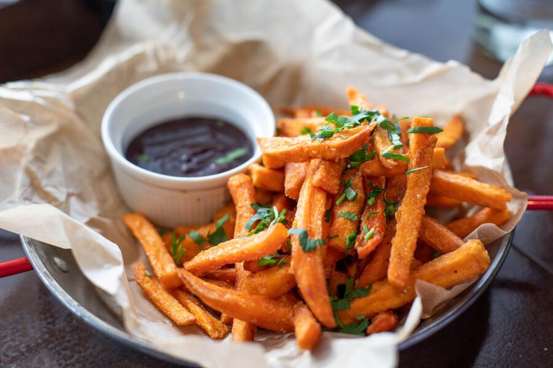

Fries

Crispy Delights: A Journey into the Irresistible World of Golden Fries
Golden Gastronomy: A Michelin-Inspired Ode to Perfectly Crisp Fries, a Culinary Masterpiece Crafted with Precision, Served with Artistry, and Accompanied by an Array of Exquisite Dips.
Ingredients
- Potatoes
- Cooking Oil
- Salt
- Spices
- Cornstarch
- Herbs
Instructions
- Wash, peel (optional), and cut potatoes into uniform matchsticks or strips.
- Soak cut potatoes in cold water for 30 minutes, then pat them completely dry.
- Fry at 325°F (165°C) until pale; remove, drain, and cool for 10 minutes.
- Re-fry at 375°F (190°C) until golden brown and crispy; remove and drain.
- Season hot fries, toss with desired spices, herbs, and salt, garnish with fresh herbs, and serve with artisanal dipping sauces.